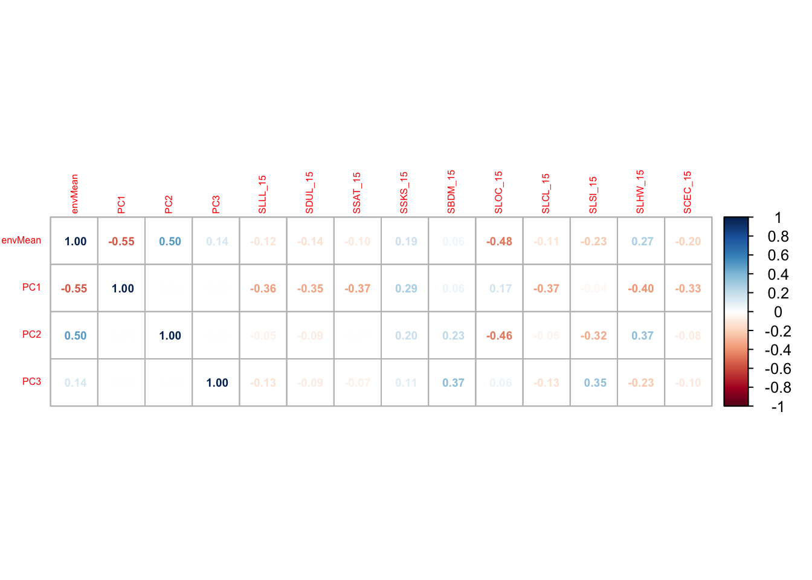

Last updated: 2023-04-10
Checks: 7 0
Knit directory: RDSSATMICH/
This reproducible R Markdown analysis was created with workflowr (version 1.7.0). The Checks tab describes the reproducibility checks that were applied when the results were created. The Past versions tab lists the development history.
Great! Since the R Markdown file has been committed to the Git repository, you know the exact version of the code that produced these results.
Great job! The global environment was empty. Objects defined in the global environment can affect the analysis in your R Markdown file in unknown ways. For reproduciblity it’s best to always run the code in an empty environment.
The command set.seed(20211116) was run prior to running
the code in the R Markdown file. Setting a seed ensures that any results
that rely on randomness, e.g. subsampling or permutations, are
reproducible.
Great job! Recording the operating system, R version, and package versions is critical for reproducibility.
Nice! There were no cached chunks for this analysis, so you can be confident that you successfully produced the results during this run.
Great job! Using relative paths to the files within your workflowr project makes it easier to run your code on other machines.
Great! You are using Git for version control. Tracking code development and connecting the code version to the results is critical for reproducibility.
The results in this page were generated with repository version 2a20bdd. See the Past versions tab to see a history of the changes made to the R Markdown and HTML files.
Note that you need to be careful to ensure that all relevant files for
the analysis have been committed to Git prior to generating the results
(you can use wflow_publish or
wflow_git_commit). workflowr only checks the R Markdown
file, but you know if there are other scripts or data files that it
depends on. Below is the status of the Git repository when the results
were generated:
Ignored files:
Ignored: .DS_Store
Ignored: .RData
Ignored: .Rhistory
Ignored: .Rproj.user/
Ignored: CUL_files/.DS_Store
Ignored: Cassava/.DS_Store
Ignored: Cassava/Evaluate.OUT
Ignored: Cassava/FreshWt.OUT
Ignored: Cassava/INFO.OUT
Ignored: Cassava/Leaves.OUT
Ignored: Cassava/Measured.OUT
Ignored: Cassava/MgmtEvent.OUT
Ignored: Cassava/MgmtOps.OUT
Ignored: Cassava/Mulch.OUT
Ignored: Cassava/Overview.OUT
Ignored: Cassava/PlantGr2.OUT
Ignored: Cassava/PlantGrf.OUT
Ignored: Cassava/PlantGro.OUT
Ignored: Cassava/Plantsum.OUT
Ignored: Cassava/SoilCBal.OUT
Ignored: Cassava/SoilCBalSum.OUT
Ignored: Cassava/SoilOrg.OUT
Ignored: Cassava/SoilTemp.OUT
Ignored: Cassava/SoilWat.OUT
Ignored: Cassava/SoilWatBal.OUT
Ignored: Cassava/Summary.OUT
Ignored: Cassava/Tiers.OUT
Ignored: Cassava/WARNING.OUT
Ignored: Cassava/Weather.OUT
Ignored: Evaluate.OUT
Ignored: FreshWt.OUT
Ignored: INFO.OUT
Ignored: Leaves.OUT
Ignored: Measured.OUT
Ignored: MgmtEvent.OUT
Ignored: MgmtOps.OUT
Ignored: Mulch.OUT
Ignored: Needhelp.R
Ignored: OVERVIEW.OUT
Ignored: PlantGr2.OUT
Ignored: PlantGrf.OUT
Ignored: PlantGro.OUT
Ignored: Plantsum.OUT
Ignored: Result/.DS_Store
Ignored: Result/PlotGLUE/
Ignored: Result/PlotLocat_GLUEHWAM/.DS_Store
Ignored: SoilCBal.OUT
Ignored: SoilCBalSum.OUT
Ignored: SoilOrg.OUT
Ignored: SoilTemp.OUT
Ignored: SoilWat.OUT
Ignored: SoilWatBal.OUT
Ignored: Summary.OUT
Ignored: Tiers.OUT
Ignored: WARNING.OUT
Ignored: Weather.OUT
Ignored: Weather/.DS_Store
Ignored: data/.DS_Store
Ignored: data/CSfiles/.DS_Store
Ignored: data/DSSATtempfile/.DS_Store
Ignored: data/IITA2021_CABASE/.DS_Store
Ignored: data/IITA2021_Mich/.DS_Store
Ignored: data/IITA2021_Mich/CGM_Data/.DS_Store
Ignored: data/IITA2021_Mich/CGM_Data/D21J/.DS_Store
Ignored: data/IITA2021_Mich/CGM_Data/MichelData/.DS_Store
Ignored: data/IITA2021_Mich/CGM_Data/Set_A/.DS_Store
Ignored: data/IITA2021_Mich/CGM_Data/Set_B/.DS_Store
Ignored: data/IITA2021_Mich/Leaf/.DS_Store
Ignored: data/IITA2021_Mich/Leaf/Area/.DS_Store
Ignored: data/WEATHERdata/.DS_Store
Note that any generated files, e.g. HTML, png, CSS, etc., are not included in this status report because it is ok for generated content to have uncommitted changes.
These are the previous versions of the repository in which changes were
made to the R Markdown (analysis/StatGXE.Rmd) and HTML
(docs/StatGXE.html) files. If you’ve configured a remote
Git repository (see ?wflow_git_remote), click on the
hyperlinks in the table below to view the files as they were in that
past version.
| File | Version | Author | Date | Message |
|---|---|---|---|---|
| Rmd | 2a20bdd | Michelle Okoma | 2023-04-10 | Add my first analysis |
| Rmd | 5039d8b | Michelle Okoma | 2023-04-10 | Initial commit |
| Rmd | 5a6fcbc | Michelle Okoma | 2023-04-10 | Initial commit |
| Rmd | 9333df1 | Michelle Okoma | 2023-04-10 | Initial project |
#Data preparation for Statistical analysis
library(tidyverse)── Attaching packages ─────────────────────────────────────── tidyverse 1.3.2 ──
✔ ggplot2 3.3.6 ✔ purrr 0.3.5
✔ tibble 3.1.8 ✔ dplyr 1.0.10
✔ tidyr 1.2.1 ✔ stringr 1.4.1
✔ readr 2.1.2 ✔ forcats 0.5.2
── Conflicts ────────────────────────────────────────── tidyverse_conflicts() ──
✖ dplyr::filter() masks stats::filter()
✖ dplyr::lag() masks stats::lag()library(statgenGxE)
library(corrplot)corrplot 0.92 loadedlibrary(gridExtra)
Attaching package: 'gridExtra'
The following object is masked from 'package:dplyr':
combinelibrary(grid)
library(gridtext)
library(lemon)
Attaching package: 'lemon'
The following object is masked from 'package:purrr':
%||%
The following objects are masked from 'package:ggplot2':
CoordCartesian, element_renderGLUEVAL2 <- read_csv("data/GLUEVALana2.csv")Rows: 899 Columns: 44
── Column specification ────────────────────────────────────────────────────────
Delimiter: ","
chr (3): source, Clone, EXCODE
dbl (41): TRNO, HWAMS, HWAMM, LAIXS, LAIXM, CWAMS, CWAMM, TMIN, TMAX, SRAD, ...
ℹ Use `spec()` to retrieve the full column specification for this data.
ℹ Specify the column types or set `show_col_types = FALSE` to quiet this message.EVAL2StatGXE1 <- GLUEVAL2 %>% dplyr::select(source, Clone, HWAMMS, HWAMMSsq, ELEV, LAT, LONG, RAIN, RAIN_6, RAIN_9, RAIN_12, RH2M, RH2M_6, RH2M_9, RH2M_12, WIND, WIND_6, WIND_9, WIND_12, SRAD, SRAD_6, SRAD_9, SRAD_12, TMIN, TMIN_6, TMIN_9, TMIN_12, TMAX, TMAX_6, TMAX_9, TMAX_12, PAR, PAR_6, PAR_9, PAR_12, year)
#EVAL2StatGXE1$HWAMMS <- multMissing(EVAL2StatGXE1$HWAMMS, maxIter = 10, naStrings = NULL)
#EVAL2StatGXE1$HWAMMSsq <- multMissing(EVAL2StatGXE1$HWAMMSsq, maxIter = 10, naStrings = NULL)
EVAL2StatGXE2 <- EVAL2StatGXE1 %>%
filter(source %in% names(table(EVAL2StatGXE1$source))[table(EVAL2StatGXE1$source) > 20])## AMMI functions do not accept more than 30 % missing data.
EVAL2StatGXE <- statgenSTA::createTD(data = EVAL2StatGXE2, genotype = "Clone", trial = "source")AMMIStatGXE <- gxeAmmi(TD = EVAL2StatGXE, trait = "HWAMMS", nPC = 3)#byYear = 2019
#summary(AMMIStatGXE)
write.csv(AMMIStatGXE$anova, "Result/AMMIStatGXEanova.csv", quote = F, row.names = F)
write.csv(AMMIStatGXE$importance, "Result/AMMIStatGXEimportance.csv", quote = F, row.names = F)
## Create an AMMI1 plot.
#genotype scaling, with emphasis on approximation of relations between genotypes (scale = 0)
#environment scaling, with emphasis on approximation of relations between environments (scale = 1)
#symmetric scaling, a compromise (scale = 0.5)
#jpeg(filename = "AMMI2env.jpeg", res = 400, width = 14, height = 8, units = "cm")
CFIG1 <- plot(AMMIStatGXE, plotType = "AMMI1", scale = 1, title = "Interactive PC1 vs main effects") + theme_classic() #dev.off()
CFIG2 <- plot(AMMIStatGXE, plotType = "AMMI2", scale = 0.5, title = "PC1 vs PC2") + theme_classic()#dev.off()
#nt <- theme(legend.position='none')
#p = list(CFIG1+nt, CFIG2+nt) %>% map(~.x + labs(x=NULL, y=NULL))
#jpeg(filename = "Result/Rcomparison.jpeg")
#grid_arrange_shared_legend(CFIG1+nt, CFIG2+nt)#ncol = 2, nrow = 1
#dev.off() ##I use the AMMI envScores to look for a link with env parameters
# weather data check
AMMIenvscores1 <- AMMIStatGXE$envScores # using for environ scores
AMMIenvscores2 <- as.data.frame(AMMIenvscores1)
AMMIenvscores3 <- as_tibble(rownames_to_column(AMMIenvscores2)) %>%
mutate(ENV = rowname) %>%
#envScPC1 = PC1,
#envScPC2 = PC2) %>%
dplyr::select(-rowname)
AMMIenvMean1 <- AMMIStatGXE$envMean #using for environ mean (mean of root harvested by envi)n
AMMIenvMean2 <- as.data.frame(AMMIenvMean1)
AMMIenvMean3 <- as_tibble(rownames_to_column(AMMIenvMean2)) %>%
mutate(ENV = rowname,
envMean = AMMIenvMean1) %>%
dplyr::select(-rowname, -AMMIenvMean1)
EVAL2StatGXEenv <- EVAL2StatGXE1 %>%
dplyr::select(-Clone, -HWAMMS, -HWAMMSsq) %>%
mutate(ENV = source) %>%
dplyr::group_by(ENV) %>%
dplyr::summarise(ELEV = unique(ELEV),
LAT = unique(LAT),
LONG = unique(LONG),
RAIN = unique(RAIN),
RAIN_6 = unique(RAIN_6),
RAIN_9 = unique(RAIN_9),
RAIN_12 = unique(RAIN_12),
SRAD = unique(SRAD),
SRAD_6 = unique(SRAD_6),
SRAD_9 = unique(SRAD_9),
SRAD_12 = unique(SRAD_12),
TMIN = unique(TMIN),
TMIN_6 = unique(TMIN_6),
TMIN_9 = unique(TMIN_9),
TMIN_12 = unique(TMIN_12),
TMAX = unique(TMAX),
TMAX_6 = unique(TMAX_6),
TMAX_9 = unique(TMAX_9),
TMAX_12 = unique(TMAX_12),
RH2M = unique(RH2M),
RH2M_6 = unique(RH2M_6),
RH2M_9 = unique(RH2M_9),
RH2M_12 = unique(RH2M_12),
WIND = unique(WIND),
WIND_6 = unique(WIND_6),
WIND_9 = unique(WIND_9),
WIND_12 = unique(WIND_12),
PAR = unique(PAR),
PAR_6 = unique(PAR_6),
PAR_9 = unique(PAR_9),
PAR_12 = unique(PAR_12))
StatGXEenv1 <- left_join(AMMIenvMean3, AMMIenvscores3)Joining, by = "ENV"StatGXEenv11 <- left_join(StatGXEenv1, EVAL2StatGXEenv)Joining, by = "ENV"StatGXEenv2 <- as_tibble(StatGXEenv11) %>% dplyr::select(-ENV)
#corrplot(cor(StatGXEenv2[,-2]))
#corrplot(cor(StatGXEenv2[,-1]))
#jpeg(filename = "correlationEX.jpeg", res = 400, width = 14, height = 8, units = "cm")
StatGXEenv2_cor <- cor(StatGXEenv2)
StatGXEenv2_cor <- StatGXEenv2_cor[1:4,]
Figplot1 <- corrplot(StatGXEenv2_cor, tl.cex = 0.5, number.cex=0.5, method = "number", sig.level = 0.01, insig = "blank")#dev.off()#soil profile check
Tral0 <- read_lines(here::here("SOIL.SOL"))
strtTrt01 <- grep(pattern = "*NG04041467", x = Tral0, fixed=T)
Tral01 <- read_lines(here::here("SOIL.SOL"), skip = 1953, n_max = 6 )#NG04365455 UMUDIKE
write_lines(Tral01, "test0.txt")
Tral01 <- read.table("test0.txt", header = FALSE, sep = "", dec = ".")
Tral02 <- read_lines(here::here("SOIL.SOL"), skip = 1966, n_max = 6 )#NG04408648 ONNE
write_lines(Tral02, "test0.txt")
Tral02 <- read.table("test0.txt", header = FALSE, sep = "", dec = ".")
Tral03 <- read_lines(here::here("SOIL.SOL"), skip = 1979, n_max = 6 )#NG04309279 UBIAJA
write_lines(Tral03, "test0.txt")
Tral03 <- read.table("test0.txt", header = FALSE, sep = "", dec = ".")
Tral04 <- read_lines(here::here("SOIL.SOL"), skip = 1992, n_max = 6 )#NG04304916 IKENNE
write_lines(Tral04, "test0.txt")
Tral04 <- read.table("test0.txt", header = FALSE, sep = "", dec = ".")
Tral05 <- read_lines(here::here("SOIL.SOL"), skip = 2005, n_max = 6 )#NG04292017 OTOBI
write_lines(Tral05, "test0.txt")
Tral05 <- read.table("test0.txt", header = FALSE, sep = "", dec = ".")
Tral06 <- read_lines(here::here("SOIL.SOL"), skip = 2018, n_max = 6 )#NG04283331 AGO-OWO
write_lines(Tral06, "test0.txt")
Tral06 <- read.table("test0.txt", header = FALSE, sep = "", dec = ".")
Tral07 <- read_lines(here::here("SOIL.SOL"), skip = 2031, n_max = 6 )#NG04261714 IBADAN
write_lines(Tral07, "test0.txt")
Tral07 <- read.table("test0.txt", header = FALSE, sep = "", dec = ".")
Tral08 <- read_lines(here::here("SOIL.SOL"), skip = 2044, n_max = 6 )#NG04171020 MOKWA
write_lines(Tral08, "test0.txt")
Tral08 <- read.table("test0.txt", header = FALSE, sep = "", dec = ".")
Tral09 <- read_lines(here::here("SOIL.SOL"), skip = 2057, n_max = 6 )#NG04184010 ABUJA
write_lines(Tral09, "test0.txt")
Tral09 <- read.table("test0.txt", header = FALSE, sep = "", dec = ".")
Tral10 <- read_lines(here::here("SOIL.SOL"), skip = 2070, n_max = 6 )#NG04088975 ZARIA
write_lines(Tral10, "test0.txt")
Tral10 <- read.table("test0.txt", header = FALSE, sep = "", dec = ".")
Tral11 <- read_lines(here::here("SOIL.SOL"), skip = 2083, n_max = 6 )#NG04041467 KANO
write_lines(Tral11, "test0.txt")
Tral11 <- read.table("test0.txt", header = FALSE, sep = "", dec = ".")
TRAL <- bind_rows(Tral01, Tral02, Tral03, Tral04, Tral05, Tral06, Tral07, Tral08, Tral09, Tral10, Tral11, .id = "source")
TRALA <- TRAL %>% mutate(Location = case_when(source == 1 ~ "UMUDIKE",
source == 2 ~ "ONNE",
source == 3 ~ "UBIAJA",
source == 4 ~ "IKENNE",
source == 5 ~ "OTOBI",
source == 6 ~ "AGO-OWO",
source == 7 ~ "IBADAN",
source == 8 ~ "MOKWA",
source == 9 ~ "ABUJA",
source == 10 ~ "ZARIA",
source == 11 ~ "KANO"),
Deth = V1,
SLLL_15 = case_when(V1 == 15 ~ V3),
SLLL_100 = case_when(V1 == 100 ~ V3),
SDUL_15 = case_when(V1 == 15 ~ V4),
SDUL_100 = case_when(V1 == 100 ~ V4),
SSAT_15 = case_when(V1 == 15 ~ V5),
SSAT_100 = case_when(V1 == 100 ~ V5),
SRGF_15 = case_when(V1 == 15 ~ V6),
SRGF_100 = case_when(V1 == 100 ~ V6),
SSKS_15 = case_when(V1 == 15 ~ V7),
SSKS_100 = case_when(V1 == 100 ~ V7),
SBDM_15 = case_when(V1 == 15 ~ V8),
SBDM_100 = case_when(V1 == 100 ~ V8),
SLOC_15 = case_when(V1 == 15 ~ V9),
SLOC_100 = case_when(V1 == 100 ~ V9),
SLCL_15 = case_when(V1 == 15 ~ V10),
SLCL_100 = case_when(V1 == 100 ~ V10),
SLSI_15 = case_when(V1 == 15 ~ V11),
SLSI_100 = case_when(V1 == 100 ~ V11),
SLNI_15 = case_when(V1 == 15 ~ V13),
SLNI_100 = case_when(V1 == 100 ~ V13),
SLHW_15 = case_when(V1 == 15 ~ V14),
SLHW_100 = case_when(V1 == 100 ~ V14),
SCEC_15 = case_when(V1 == 15 ~ V16),
SCEC_100 = case_when(V1 == 100 ~ V16)) %>%
filter(V1 == 15 | V1 == 100) %>%
dplyr::select(-V1, -V2, -V3, -V4, -V5, -V6, -V7, -V8, -V9, -V10, -V11, -V12, -V13, -V14, -V15, -V16, -V17, -source)
StatGXEenv1 <- left_join(AMMIenvMean3, AMMIenvscores3)Joining, by = "ENV" StatGXEenvsol1 <- StatGXEenv1 %>%
mutate(Location = case_when(ENV == "Abuja19" ~ "ABUJA",
ENV == "Ago17" ~ "AGO-OWO",
ENV == "Ago18" ~ "AGO-OWO",
ENV == "Ago19" ~ "AGO-OWO",
ENV == "Ibadan17" ~ "IBADAN",
ENV == "Ibadan18" ~ "IBADAN",
ENV == "Ibadan19" ~ "IBADAN",
ENV == "Ikenne17" ~ "IKENNE",
ENV == "Ikenne18" ~ "IKENNE",
ENV == "Ikenne19" ~ "IKENNE",
ENV == "Kano18" ~ "KANO",
ENV == "Mokwa17" ~ "MOKWA",
ENV == "Mokwa18" ~ "MOKWA",
ENV == "Mokwa19" ~ "MOKWA",
ENV == "Onne18" ~ "ONNE",
ENV == "Otobi18" ~ "OTOBI",
ENV == "Ubiaja19" ~ "UBIAJA",
ENV == "Umudike18" ~ "UMUDIKE"))
StatGXEenvsol2 <- left_join(StatGXEenvsol1 , TRALA) %>%
dplyr::select(-ENV, Deth)#-LocationJoining, by = "Location"StatGXEenvsol3 <- StatGXEenvsol2 %>% filter(!is.na(SLNI_15)) %>%
dplyr::select(envMean, Location, PC1, PC2, PC3, SLLL_15, SDUL_15, SSAT_15, SSKS_15, SBDM_15, SLOC_15, SLCL_15, SLSI_15, SLHW_15, SCEC_15)#SRGF_15, SLNI_15,
StatGXEenvsol4 <- StatGXEenvsol2 %>% filter(!is.na(SLNI_100)) %>%
dplyr::select(envMean, Location, PC1, PC2, PC3, SLLL_100, SSAT_100, SDUL_100, SSKS_100, SBDM_100, SLOC_100, SLCL_100, SLSI_100, SLHW_100, SCEC_100) #SLNI_100, SRGF_100,
StatGXEenvsol5 <- left_join(StatGXEenvsol3 , StatGXEenvsol4) %>% dplyr::select(-Location) Joining, by = c("envMean", "Location", "PC1", "PC2", "PC3")#jpeg(filename = "correlationENsol.jpeg", res = 400, width = 14, height = 8, units = "cm")
#Run only for 15cm of soil profile
StatGXEenvsol3 <- StatGXEenvsol3 %>% dplyr::select(-Location)
StatGXEenvsol3_cor <- cor(StatGXEenvsol3)
StatGXEenvsol3_cor <- StatGXEenvsol3_cor[1:4, ]
Figplot2 <- corrplot(StatGXEenvsol3_cor, tl.cex = 0.5, number.cex=0.6, method = "number", sig.level = 0.01, insig = "blank")
#jpeg(filename = "Result/Rcomparison.jpeg")
#dev.off()#plot all environments parameter in the same plot
StatGXEenvT <- left_join(StatGXEenv2,StatGXEenvsol3)Joining, by = c("envMean", "PC1", "PC2", "PC3")StatGXEenvT_cor <- cor(StatGXEenvT)
StatGXEenvT_cor <- StatGXEenvT_cor[1:4,]
corrplot(StatGXEenvT_cor, tl.cex = 0.5, method = "number", sig.level = 0.01, insig = "blank")No longer important ##filter environ with total dry root mean between 1st and 3rd quantile to continue Model calibration
#envMeanFiltered <- AMMIenvMean3 %>% filter(envMean > quantile(envMean, 0.25) & envMean < quantile(envMean, 0.75))
#genoMeanFiltered <- AMMIgenoMean3 %>% filter(genoMean > quantile(genoMean, 0.25) & genoMean < quantile(genoMean, 0.75))PhenoDIS <- read_csv("data/IITA2021_CABASE/UYT_GXE_pheno.csv")Rows: 3685 Columns: 94
── Column specification ────────────────────────────────────────────────────────
Delimiter: ","
chr (16): programName, programDescription, studyName, studyDescription, stud...
dbl (77): studyYear, programDbId, studyDbId, plotWidth, plotLength, fieldSiz...
lgl (1): plantNumber
ℹ Use `spec()` to retrieve the full column specification for this data.
ℹ Specify the column types or set `show_col_types = FALSE` to quiet this message.spec(PhenoDIS)cols(
studyYear = col_double(),
programDbId = col_double(),
programName = col_character(),
programDescription = col_character(),
studyDbId = col_double(),
studyName = col_character(),
studyDescription = col_character(),
studyDesign = col_character(),
plotWidth = col_double(),
plotLength = col_double(),
fieldSize = col_double(),
fieldTrialIsPlannedToBeGenotyped = col_character(),
fieldTrialIsPlannedToCross = col_character(),
plantingDate = col_character(),
harvestDate = col_character(),
locationDbId = col_double(),
locationName = col_character(),
germplasmDbId = col_double(),
germplasmName = col_character(),
germplasmSynonyms = col_character(),
observationLevel = col_character(),
observationUnitDbId = col_double(),
observationUnitName = col_character(),
replicate = col_double(),
blockNumber = col_double(),
plotNumber = col_double(),
rowNumber = col_double(),
colNumber = col_double(),
entryType = col_character(),
plantNumber = col_logical(),
`L chromometer value|CO_334:0002065` = col_double(),
`a chromometer value|CO_334:0002066` = col_double(),
`apical pubescence visual rating 0-2|CO_334:0000309` = col_double(),
`b chromometer value|CO_334:0002064` = col_double(),
`branching level counting|CO_334:0000079` = col_double(),
`cassava bacterial blight incidence 3-month evaluation|CO_334:0000178` = col_double(),
`cassava bacterial blight severity 3-month evaluation|CO_334:0000175` = col_double(),
`cassava green mite severity first evaluation|CO_334:0000189` = col_double(),
`cassava green mite severity second evaluation|CO_334:0000190` = col_double(),
`cassava mosaic disease incidence 1-month evaluation|CO_334:0000195` = col_double(),
`cassava mosaic disease incidence 3-month evaluation|CO_334:0000196` = col_double(),
`cassava mosaic disease severity 1-month evaluation|CO_334:0000191` = col_double(),
`cassava mosaic disease severity 3-month evaluation|CO_334:0000192` = col_double(),
`central leaf shape visual rating 1-10|CO_334:0000119` = col_double(),
`dry matter content by specific gravity method|CO_334:0000160` = col_double(),
`dry matter content percentage|CO_334:0000092` = col_double(),
`dry yield|CO_334:0000014` = col_double(),
`ease of peeling root cortex visual rating 1-3|CO_334:0000308` = col_double(),
`first apical branch height measurement in cm|CO_334:0000106` = col_double(),
`first fully expanded leaf color visual rating 1-9|CO_334:0000102` = col_double(),
`fresh root yield|CO_334:0000013` = col_double(),
`fresh shoot weight measurement in kg per plot|CO_334:0000016` = col_double(),
`fresh storage root weight per plot|CO_334:0000012` = col_double(),
`fufu dry weight in kg|CO_334:0002019` = col_double(),
`fufu fibre weight in g|CO_334:0002016` = col_double(),
`fufu initial weight in kg|CO_334:0002013` = col_double(),
`fufu peel weight in kg|CO_334:0002014` = col_double(),
`fufu peeled root weight in kg|CO_334:0002015` = col_double(),
`fufu pressed weight in kg|CO_334:0002018` = col_double(),
`gari fried weight in kg|CO_334:0002026` = col_double(),
`gari initial weight in kg|CO_334:0002020` = col_double(),
`gari mash weight in kg|CO_334:0002023` = col_double(),
`gari peel weight in kg|CO_334:0002021` = col_double(),
`gari peeled root weight in kg|CO_334:0002022` = col_double(),
`gari pressed weight in kg|CO_334:0002024` = col_double(),
`gari pulverised weight in kg|CO_334:0002025` = col_double(),
`gari shaft coarse weight in g|CO_334:0002027` = col_double(),
`gari shaft medium weight in g|CO_334:0002028` = col_double(),
`harvest index variable|CO_334:0000015` = col_double(),
`initial vigor assessment 1-7|CO_334:0000009` = col_double(),
`petiole color visual rating 1-9|CO_334:0000023` = col_double(),
`plant architecture visual rating 1-5|CO_334:0000099` = col_double(),
`plant height measurement in cm|CO_334:0000018` = col_double(),
`plant stands harvested counting|CO_334:0000010` = col_double(),
`root evaluation scaled 1-5|CO_334:0000228` = col_double(),
`root neck length visual rating 0-7|CO_334:0000022` = col_double(),
`root number counting|CO_334:0000011` = col_double(),
`root weight in air|CO_334:0000157` = col_double(),
`root weight in water|CO_334:0000158` = col_double(),
`rotted storage root counting|CO_334:0000084` = col_double(),
`specific gravity|CO_334:0000163` = col_double(),
`sprout count at one-month|CO_334:0000213` = col_double(),
`sprout count at three-month|CO_334:0000214` = col_double(),
`sprouting proportion|CO_334:0000008` = col_double(),
`starch content percentage|CO_334:0000071` = col_double(),
`staygreen visual scale 1-9|CO_334:0000224` = col_double(),
`storage root cortex color visual rating 1-4|CO_334:0000115` = col_double(),
`storage root periderm color visual rating 1-4|CO_334:0000064` = col_double(),
`storage root pulp color visual rating 1-3|CO_334:0000021` = col_double(),
`storage root shape visual rating 1-6|CO_334:0000020` = col_double(),
`storage root size visual rating 1-7|CO_334:0000019` = col_double(),
`total carotenoid by chart 1-8|CO_334:0000161` = col_double(),
`unexpanded apical leaf color visual rating 1-9|CO_334:0000101` = col_double(),
notes = col_character()
)PhenoDISE <- PhenoDIS %>% rename(Year = studyYear,
Clone = germplasmName,
Location = locationName,
CB_3Min = "cassava bacterial blight incidence 3-month evaluation|CO_334:0000178",
CB_3Msev = "cassava bacterial blight severity 3-month evaluation|CO_334:0000175",
CGM_1sev = "cassava green mite severity first evaluation|CO_334:0000189",
CGM_2sev = "cassava green mite severity second evaluation|CO_334:0000190",
CMO_1Min = "cassava mosaic disease incidence 1-month evaluation|CO_334:0000195",
CMO_3Min = "cassava mosaic disease incidence 3-month evaluation|CO_334:0000196",
CMO_1Msev = "cassava mosaic disease severity 1-month evaluation|CO_334:0000191",
CMO_3Msev = "cassava mosaic disease severity 3-month evaluation|CO_334:0000192",
HWAM = "fresh storage root weight per plot|CO_334:0000012",
CWAM = "fresh shoot weight measurement in kg per plot|CO_334:0000016") %>%
dplyr::select(Clone, CB_3Min, CB_3Msev, CGM_1sev, CGM_2sev, CMO_1Min, CMO_3Min, CMO_1Msev, CMO_3Msev)# year, Location, HWAM, CWAM
write.csv(PhenoDISE, "data/IITA2021_Mich/PhenoDisea.csv", quote = F, row.names = F)#phenotype data measured from Ibadan 2021.
Phenocomp1 <- read_csv("data/IITA2021_Mich/Phenotyp_Mich2021.csv")Rows: 720 Columns: 31
── Column specification ────────────────────────────────────────────────────────
Delimiter: ","
chr (1): accession_name
dbl (30): rep_number, plant_number, stem_nu, branching_point, branchpoint1_F...
ℹ Use `spec()` to retrieve the full column specification for this data.
ℹ Specify the column types or set `show_col_types = FALSE` to quiet this message.Phenocomp2 <- Phenocomp1 %>%
group_by(accession_name) %>%
dplyr::summarise_all(funs(mean(., na.rm = TRUE)))Warning: `funs()` was deprecated in dplyr 0.8.0.
ℹ Please use a list of either functions or lambdas:
# Simple named list: list(mean = mean, median = median)
# Auto named with `tibble::lst()`: tibble::lst(mean, median)
# Using lambdas list(~ mean(., trim = .2), ~ median(., na.rm = TRUE))Phenocomp3 <- Phenocomp2 %>% mutate(Clone = accession_name,
branchP = branching_point) %>%
dplyr::select(Clone, stem_nu, stem_D, branchP, plant_H)
#complete with leaf area data
Phenoleaf1 <- read_csv("data/IITA2021_Mich/AreaData.csv")New names:
Rows: 630 Columns: 5
── Column specification
──────────────────────────────────────────────────────── Delimiter: "," chr
(2): accession_name, Slice dbl (3): ...1, leaf_no, Total.Area
ℹ Use `spec()` to retrieve the full column specification for this data. ℹ
Specify the column types or set `show_col_types = FALSE` to quiet this message.
• `` -> `...1`spec(Phenoleaf1)cols(
...1 = col_double(),
accession_name = col_character(),
leaf_no = col_double(),
Slice = col_character(),
Total.Area = col_double()
)#To solve Clone name issue
#Phenoleaf1$accession_name <- Phenoleaf1$accession_name %>%
# gsub(pattern = "IITA_TMS_IB", replacement = "IITA-TMS-") %>%
# gsub(pattern = "TMS14F1159P00", replacement = "TMS14F1159P000")
Phenoleaf1$accession_name <- Phenoleaf1$accession_name %>% str_replace_all( c("IITA_TMS_IBA00070"="IITA-TMS-IBA000070",
"IITA_TMS_IBA30572"="IITA-TMS-IBA30572",
"IITA_TMS_IBA980581"="IITA-TMS-IBA980581",
"IITA_TMS_IBA982101"="IITA-TMS-IBA982101",
"TMS14F1159P003"="TMS14F1159P0003"))
Phenoleaf2 <- Phenoleaf1 %>%
group_by(accession_name) %>%
dplyr::summarise_all(funs(mean(., na.rm = TRUE)))Warning in mean.default(Slice, na.rm = TRUE): argument is not numeric or
logical: returning NAWarning in mean.default(Slice, na.rm = TRUE): argument is not numeric or
logical: returning NA
Warning in mean.default(Slice, na.rm = TRUE): argument is not numeric or
logical: returning NA
Warning in mean.default(Slice, na.rm = TRUE): argument is not numeric or
logical: returning NA
Warning in mean.default(Slice, na.rm = TRUE): argument is not numeric or
logical: returning NA
Warning in mean.default(Slice, na.rm = TRUE): argument is not numeric or
logical: returning NA
Warning in mean.default(Slice, na.rm = TRUE): argument is not numeric or
logical: returning NA
Warning in mean.default(Slice, na.rm = TRUE): argument is not numeric or
logical: returning NA
Warning in mean.default(Slice, na.rm = TRUE): argument is not numeric or
logical: returning NA
Warning in mean.default(Slice, na.rm = TRUE): argument is not numeric or
logical: returning NA
Warning in mean.default(Slice, na.rm = TRUE): argument is not numeric or
logical: returning NA
Warning in mean.default(Slice, na.rm = TRUE): argument is not numeric or
logical: returning NA
Warning in mean.default(Slice, na.rm = TRUE): argument is not numeric or
logical: returning NA
Warning in mean.default(Slice, na.rm = TRUE): argument is not numeric or
logical: returning NA
Warning in mean.default(Slice, na.rm = TRUE): argument is not numeric or
logical: returning NA
Warning in mean.default(Slice, na.rm = TRUE): argument is not numeric or
logical: returning NA
Warning in mean.default(Slice, na.rm = TRUE): argument is not numeric or
logical: returning NA
Warning in mean.default(Slice, na.rm = TRUE): argument is not numeric or
logical: returning NA
Warning in mean.default(Slice, na.rm = TRUE): argument is not numeric or
logical: returning NA
Warning in mean.default(Slice, na.rm = TRUE): argument is not numeric or
logical: returning NA
Warning in mean.default(Slice, na.rm = TRUE): argument is not numeric or
logical: returning NA
Warning in mean.default(Slice, na.rm = TRUE): argument is not numeric or
logical: returning NA
Warning in mean.default(Slice, na.rm = TRUE): argument is not numeric or
logical: returning NA
Warning in mean.default(Slice, na.rm = TRUE): argument is not numeric or
logical: returning NA
Warning in mean.default(Slice, na.rm = TRUE): argument is not numeric or
logical: returning NA
Warning in mean.default(Slice, na.rm = TRUE): argument is not numeric or
logical: returning NA
Warning in mean.default(Slice, na.rm = TRUE): argument is not numeric or
logical: returning NA
Warning in mean.default(Slice, na.rm = TRUE): argument is not numeric or
logical: returning NA
Warning in mean.default(Slice, na.rm = TRUE): argument is not numeric or
logical: returning NA
Warning in mean.default(Slice, na.rm = TRUE): argument is not numeric or
logical: returning NA
Warning in mean.default(Slice, na.rm = TRUE): argument is not numeric or
logical: returning NA
Warning in mean.default(Slice, na.rm = TRUE): argument is not numeric or
logical: returning NA
Warning in mean.default(Slice, na.rm = TRUE): argument is not numeric or
logical: returning NA
Warning in mean.default(Slice, na.rm = TRUE): argument is not numeric or
logical: returning NA
Warning in mean.default(Slice, na.rm = TRUE): argument is not numeric or
logical: returning NA
Warning in mean.default(Slice, na.rm = TRUE): argument is not numeric or
logical: returning NA
Warning in mean.default(Slice, na.rm = TRUE): argument is not numeric or
logical: returning NA
Warning in mean.default(Slice, na.rm = TRUE): argument is not numeric or
logical: returning NA
Warning in mean.default(Slice, na.rm = TRUE): argument is not numeric or
logical: returning NA
Warning in mean.default(Slice, na.rm = TRUE): argument is not numeric or
logical: returning NA
Warning in mean.default(Slice, na.rm = TRUE): argument is not numeric or
logical: returning NA
Warning in mean.default(Slice, na.rm = TRUE): argument is not numeric or
logical: returning NA
Warning in mean.default(Slice, na.rm = TRUE): argument is not numeric or
logical: returning NA
Warning in mean.default(Slice, na.rm = TRUE): argument is not numeric or
logical: returning NA
Warning in mean.default(Slice, na.rm = TRUE): argument is not numeric or
logical: returning NA
Warning in mean.default(Slice, na.rm = TRUE): argument is not numeric or
logical: returning NA
Warning in mean.default(Slice, na.rm = TRUE): argument is not numeric or
logical: returning NA
Warning in mean.default(Slice, na.rm = TRUE): argument is not numeric or
logical: returning NA
Warning in mean.default(Slice, na.rm = TRUE): argument is not numeric or
logical: returning NA
Warning in mean.default(Slice, na.rm = TRUE): argument is not numeric or
logical: returning NA
Warning in mean.default(Slice, na.rm = TRUE): argument is not numeric or
logical: returning NA
Warning in mean.default(Slice, na.rm = TRUE): argument is not numeric or
logical: returning NA
Warning in mean.default(Slice, na.rm = TRUE): argument is not numeric or
logical: returning NA
Warning in mean.default(Slice, na.rm = TRUE): argument is not numeric or
logical: returning NA
Warning in mean.default(Slice, na.rm = TRUE): argument is not numeric or
logical: returning NA
Warning in mean.default(Slice, na.rm = TRUE): argument is not numeric or
logical: returning NA
Warning in mean.default(Slice, na.rm = TRUE): argument is not numeric or
logical: returning NA
Warning in mean.default(Slice, na.rm = TRUE): argument is not numeric or
logical: returning NA
Warning in mean.default(Slice, na.rm = TRUE): argument is not numeric or
logical: returning NA
Warning in mean.default(Slice, na.rm = TRUE): argument is not numeric or
logical: returning NA
Warning in mean.default(Slice, na.rm = TRUE): argument is not numeric or
logical: returning NA
Warning in mean.default(Slice, na.rm = TRUE): argument is not numeric or
logical: returning NA
Warning in mean.default(Slice, na.rm = TRUE): argument is not numeric or
logical: returning NA
Warning in mean.default(Slice, na.rm = TRUE): argument is not numeric or
logical: returning NA
Warning in mean.default(Slice, na.rm = TRUE): argument is not numeric or
logical: returning NAPhenoleaf3 <- Phenoleaf2 %>%
mutate(Clone = accession_name,
LeafArea = Total.Area) %>%
dplyr::select(Clone, LeafArea)
#complete with disease
PhenoDisea1 <- read_csv("data/IITA2021_Mich/PhenoDisea.csv")Rows: 3685 Columns: 9
── Column specification ────────────────────────────────────────────────────────
Delimiter: ","
chr (1): Clone
dbl (8): CB_3Min, CB_3Msev, CGM_1sev, CGM_2sev, CMO_1Min, CMO_3Min, CMO_1Mse...
ℹ Use `spec()` to retrieve the full column specification for this data.
ℹ Specify the column types or set `show_col_types = FALSE` to quiet this message.spec(PhenoDisea1)cols(
Clone = col_character(),
CB_3Min = col_double(),
CB_3Msev = col_double(),
CGM_1sev = col_double(),
CGM_2sev = col_double(),
CMO_1Min = col_double(),
CMO_3Min = col_double(),
CMO_1Msev = col_double(),
CMO_3Msev = col_double()
)PhenoDisea2 <- PhenoDisea1 %>%
group_by(Clone) %>%
dplyr::summarise_all(funs(mean(., na.rm = TRUE)))
#Phenocolen <- unique(Phenocol)
Phenosum1 <- left_join( PhenoDisea2, Phenocomp3)Joining, by = "Clone"Phenosum <- left_join(Phenosum1, Phenoleaf3) Joining, by = "Clone"AMMIgenoScores1 <- AMMIStatGXE$genoScores #using for genotype score
AMMIgenoScores2 <- as.data.frame(AMMIgenoScores1)
AMMIgenoScores3 <- as_tibble(rownames_to_column(AMMIgenoScores2)) %>%
mutate(Clone = rowname) %>%
#genoScPC1 = PC1,
#genoScPC2 = PC2) %>%
dplyr::select(-rowname)
AMMIgenoMean1 <- AMMIStatGXE$genoMean #using for genotype mean (mean of root harvested by clone across all environment)
AMMIgenoMean2 <- as.data.frame(AMMIgenoMean1)
AMMIgenoMean3 <- as_tibble(rownames_to_column(AMMIgenoMean2)) %>%
mutate(Clone = rowname,
genoMean = AMMIgenoMean1) %>%
dplyr::select(-rowname, -AMMIgenoMean1)
StatGXEgeno1 <- left_join(AMMIgenoMean3, AMMIgenoScores3)Joining, by = "Clone"StatGXEgeno11 <- left_join(StatGXEgeno1, Phenosum)Joining, by = "Clone"StatGXEgeno11$branchP <- multMissing(StatGXEgeno11$branchP, maxIter = 10, naStrings = NULL)
StatGXEgeno11$LeafArea <- multMissing(StatGXEgeno11$LeafArea, maxIter = 10, naStrings = NULL)
StatGXEgeno2 <- as_tibble(StatGXEgeno11) %>% dplyr::select(-Clone)
#jpeg(filename = "corrplogenocheck.jpeg", res = 400, width = 14, height = 8, units = "cm")
StatGXEgeno2_cor <- cor(StatGXEgeno2)
StatGXEgeno2_cor <- StatGXEgeno2_cor[1:4, ]
Figplot2 <- corrplot(StatGXEgeno2_cor, tl.cex = 0.5, number.cex=0.6, method = "number", sig.level = 0.01, insig = "blank")#dev.off()
sessionInfo()R version 4.2.1 (2022-06-23)
Platform: x86_64-apple-darwin17.0 (64-bit)
Running under: macOS Big Sur ... 10.16
Matrix products: default
BLAS: /Library/Frameworks/R.framework/Versions/4.2/Resources/lib/libRblas.0.dylib
LAPACK: /Library/Frameworks/R.framework/Versions/4.2/Resources/lib/libRlapack.dylib
locale:
[1] en_US.UTF-8/en_US.UTF-8/en_US.UTF-8/C/en_US.UTF-8/en_US.UTF-8
attached base packages:
[1] grid stats graphics grDevices utils datasets methods
[8] base
other attached packages:
[1] lemon_0.4.5 gridtext_0.1.5 gridExtra_2.3 corrplot_0.92
[5] statgenGxE_1.0.5 forcats_0.5.2 stringr_1.4.1 dplyr_1.0.10
[9] purrr_0.3.5 readr_2.1.2 tidyr_1.2.1 tibble_3.1.8
[13] ggplot2_3.3.6 tidyverse_1.3.2 workflowr_1.7.0
loaded via a namespace (and not attached):
[1] fs_1.5.2 lubridate_1.8.0 bit64_4.0.5
[4] httr_1.4.4 rprojroot_2.0.3 tools_4.2.1
[7] backports_1.4.1 bslib_0.4.0 utf8_1.2.2
[10] R6_2.5.1 DBI_1.1.3 colorspace_2.0-3
[13] withr_2.5.0 tidyselect_1.2.0 processx_3.8.0
[16] bit_4.0.4 compiler_4.2.1 git2r_0.30.1
[19] cli_3.4.1 rvest_1.0.3 statgenSTA_1.0.9
[22] xml2_1.3.3 labeling_0.4.2 sass_0.4.2
[25] scales_1.2.1 callr_3.7.3 digest_0.6.30
[28] rmarkdown_2.16 pkgconfig_2.0.3 htmltools_0.5.3
[31] highr_0.9 dbplyr_2.2.1 fastmap_1.1.0
[34] rlang_1.0.6 readxl_1.4.1 rstudioapi_0.14
[37] farver_2.1.1 jquerylib_0.1.4 generics_0.1.3
[40] jsonlite_1.8.3 vroom_1.5.7 googlesheets4_1.0.1
[43] magrittr_2.0.3 dotCall64_1.0-2 Rcpp_1.0.9
[46] munsell_0.5.0 fansi_1.0.3 lifecycle_1.0.3
[49] stringi_1.7.8 whisker_0.4 yaml_2.3.6
[52] plyr_1.8.7 parallel_4.2.1 promises_1.2.0.1
[55] crayon_1.5.2 lattice_0.20-45 haven_2.5.1
[58] hms_1.1.2 knitr_1.40 ps_1.7.2
[61] pillar_1.8.1 reprex_2.0.2 glue_1.6.2
[64] evaluate_0.18 getPass_0.2-2 data.table_1.14.2
[67] modelr_0.1.9 vctrs_0.5.0 spam_2.9-1
[70] tzdb_0.3.0 httpuv_1.6.6 cellranger_1.1.0
[73] gtable_0.3.1 assertthat_0.2.1 cachem_1.0.6
[76] xfun_0.34 SpATS_1.0-17 xtable_1.8-4
[79] broom_1.0.1 later_1.3.0 googledrive_2.0.0
[82] gargle_1.2.1 ellipsis_0.3.2 here_1.0.1